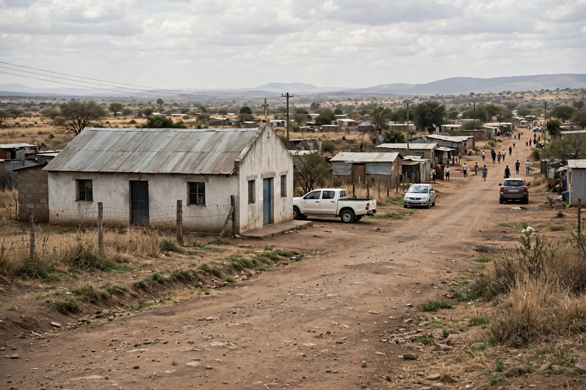

म्पुमालाङ्गाको अवैध पुनर्वास केन्द्रमा करिब २०० जना फेला, केही साङ्लोले बाँधिएका
सियाबुस्वामा गरिएको निरीक्षणमा चर्चबाट चलाइएको दर्ता नभएको केन्द्रमा दुई बालबालिकासहित करिब २०० जना मानिस साँघुरा कोठामा बसिरहेको फेला परेपछि प्रहरीले एक पास्टर र उनकी पत्नीलाई पक्राउ गरेको छ।

मुख्य बुँदाहरू
- दक्षिण अफ्रिकाका प्रहरीले शुक्रबार, अक्टोबर १६, २०२६ मा एक पास्टर र उनकी पत्नीलाई पक्राउ गरेको छ। अधिकारीहरूले म्पुमालाङ्गा प्रान्तको एउटा चर्चबाट चलाइएको दर्ता नभएको पुनर्वास केन्द्रमा करिब २००…
- केन्द्र सियाबुस्वा सहरको वाटरभाल बी स्थित चर्चमा थियो। प्रहरीले १४ जनालाई उपचारका लागि लगेको र अपहरण तथा स्वास्थ्य र सुरक्षा सम्बन्धी कसुरबारे अनुसन्धान भइरहेको बताएको छ।
- न्काङ्गाला जिल्लाका सामाजिक विकास विभागका अधिकारीहरूले बिहीबार, अक्टोबर १५ मा अवैध पुनर्वास केन्द्रका रूपमा चलाइएको आशङ्का गरिएका ठाउँहरूको निरीक्षण गर्ने क्रममा यो केन्द्र फेला पारेका थिए।…
दक्षिण अफ्रिकाका प्रहरीले शुक्रबार, अक्टोबर १६, २०२६ मा एक पास्टर र उनकी पत्नीलाई पक्राउ गरेको छ। अधिकारीहरूले म्पुमालाङ्गा प्रान्तको एउटा चर्चबाट चलाइएको दर्ता नभएको पुनर्वास केन्द्रमा करिब २०० जना मानिस बसिरहेको फेला पारेपछि यो कारबाही भएको हो। सामाजिक विकास विभागका अनुसार केही मानिसको शरीरमा घाउ थिए र केहीलाई एकअर्कासँग साङ्लोले बाँधिएको थियो।
केन्द्र सियाबुस्वा सहरको वाटरभाल बी स्थित चर्चमा थियो। प्रहरीले १४ जनालाई उपचारका लागि लगेको र अपहरण तथा स्वास्थ्य र सुरक्षा सम्बन्धी कसुरबारे अनुसन्धान भइरहेको बताएको छ।
निरीक्षकहरूले के फेला पारे
न्काङ्गाला जिल्लाका सामाजिक विकास विभागका अधिकारीहरूले बिहीबार, अक्टोबर १५ मा अवैध पुनर्वास केन्द्रका रूपमा चलाइएको आशङ्का गरिएका ठाउँहरूको निरीक्षण गर्ने क्रममा यो केन्द्र फेला पारेका थिए। उनीहरूले उक्त ठाउँमा प्रहरीको सहयोग मागेका थिए।
विभागका अनुसार पास्टर र उनकी पत्नीले सुरुमा करिब ६० जना मानिस राखेको बताएका थिए। पूरा निरीक्षणमा भने करिब २०० जना मानिस फेला परे। तीमध्ये ३० जनाभन्दा बढी महिला थिए र बाँकी पुरुष थिए। २२ वर्ष वा सोभन्दा माथिका वयस्क पुरुषसँगै ११ वर्षका बालक र १६ वर्षकी बालिका पनि त्यहाँ थिए।
विभागले अवस्थालाई अत्यन्त अमानवीय भनेको छ। उसका अनुसार एउटा अवस्थामा ३७ जना एउटै कोठामा बसिरहेका थिए, कोठाहरूमा नुहाउने र शौचालयको उचित सुविधा थिएन र पानीका धारामा ताला लगाइएको थियो। रोयटर्सले स्थानीय सञ्चारमाध्यमले केही मानिसलाई साङ्लोले बाँधेर खाना नदिइएको बताएको र फेला परेका मानिसको अवस्थाबारे ती विवरण प्रहरीले पुष्टि नगरेको जनाएको छ।
विभागका अनुसार केन्द्रमा बस्ने मानिसले मासिक ३,००० रान्ड तिर्थे। त्यसबाट प्रतिव्यक्ति १,३०० रान्ड स्काउटर भनिने मानिसहरूमार्फत भएको व्यवस्थाअनुसार चर्चलाई दिइन्थ्यो भनिएको छ। प्रारम्भिक जानकारी अनुसार मानिसहरू रस्टेनबर्ग, सोवेटो, स्प्रिङ्स, मामेलोडी र अन्य ठाउँबाट आएका थिए र केही छ महिनाभन्दा बढी समयदेखि केन्द्रमा थिए।
पक्राउ र आरोप
प्रहरीले शुक्रबार बिहान ५९ वर्षका पुरुष र ५८ वर्षकी महिलालाई पक्राउ गरेको छ। प्रहरी प्रवक्ता ब्रिगेडियर डोनाल्ड म्धुलुलीले प्रारम्भिक कामले दम्पतीले दर्ता नगरी उक्त ठाउँलाई पुनर्वास केन्द्रका रूपमा चलाएको देखाएको बताए।
दम्पतीमाथि अपहरण, दर्ता नभएको उपचार केन्द्र चलाएको र स्वास्थ्य तथा सुरक्षा नियम नमानेको आरोप छ। म्धुलुलीका अनुसार आरोपहरू लागूपदार्थ दुरुपयोग रोकथाम तथा उपचार ऐनको दफा १९, वातावरणीय स्वास्थ्य उपनियम र राष्ट्रिय स्वास्थ्य ऐनसँग सम्बन्धित छन्।
म्धुलुलीले म्पुमालाङ्गा प्रहरी आयुक्त लेफ्टिनेन्ट जनरल अपाफिया मोडिसेको नेतृत्वमा जासुस र विशेष एकाइहरूको टोली खटाइएको बताए। प्रहरीले थप पक्राउ हुन सक्ने सम्भावना नकारेको छैन र थप आरोप लाग्न सक्ने बताएको छ। दम्पती सोमबार, अक्टोबर १९, २०२६ मा सियाबुस्वाको म्दुत्जाना मजिस्ट्रेट अदालतमा उपस्थित हुनुपर्नेछ।
फेला परेका मानिसको हेरचाह
विभागले सम्भव भएसम्म मानिसहरूलाई परिवारसँग भेट गराउन अभिभावकहरूसँग सम्पर्क गर्न थालेको बताएको छ। उनीहरूको हेरचाह निरन्तर रहोस् भनेर मानिसहरूलाई उनीहरूको घर क्षेत्रका सामाजिक विकास सेवामा पठाउने योजना पनि छ।
मोडिसेले उक्त ठाउँका मानिसहरूको सुरक्षाका लागि काम गरेका सामाजिक विकास र वातावरणीय स्वास्थ्य अधिकारीहरूलाई धन्यवाद दिइन् र पक्राउ गर्ने प्रहरी सदस्यहरूलाई पनि धन्यवाद दिइन्।
दक्षिण अफ्रिकामा फैलिएको समस्या
बीबीसीले लागूपदार्थको प्रयोग बढेसँगै दक्षिण अफ्रिकामा पछिल्ला वर्षहरूमा अवैध पुनर्वास केन्द्र बढेको जनाएको छ। गत वर्ष सामाजिक विकास विभागले देशभर १०० भन्दा बढी अवैध सुविधा फेला पारेको बताएको थियो, तीमध्ये धेरैजसो गौतेङ प्रान्तमा थिए। विभागका अनुसार यस हप्ता सियाबुस्वामा फेला परेका धेरै मानिस पनि गौतेङ र जोहानेसबर्ग तथा रस्टेनबर्ग नजिकका बस्तीबाट आएका थिए।
समयरेखा
- Oct 15, 2026न्काङ्गाला जिल्लामा अवैध पुनर्वास केन्द्रको आशङ्का गरिएका ठाउँहरूको निरीक्षण गरिरहेका सामाजिक विकास अधिकारीहरूले सियाबुस्वाको वाटरभाल बी स्थित चर्चमा करिब २०० जना मानिस फेला पारे र प्रहरीलाई बोलाए। त्यस रात १४ जनालाई उपचारका लागि लगियो।
- Oct 16, 2026प्रहरीले शुक्रबार बिहान ५९ वर्षका पुरुष र ५८ वर्षकी महिलालाई पक्राउ गर्यो। प्रहरीका अनुसार केन्द्र दर्ता भएको थिएन, र दम्पतीमाथि अपहरण तथा स्वास्थ्य र सुरक्षा सम्बन्धी आरोप छन्, अदालतको मिति सियाबुस्वामा सोमबारका लागि तोकिएको छ।